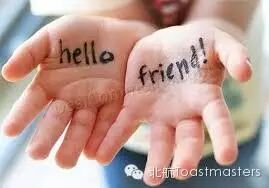
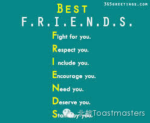

Time: Friday Jun. 6 19:30-21:30
Venue: Room A212, New Main Building, Beihang University

Toastmaster: Monk
General evaluator: Jason
When it comes to finding friends, perhaps the first step is understanding what exactly friendship is. Does it mean you have each other in your wechat address list? Or that you see each other every day? Not really. A relationship needs to have some key elements in order to be labeled as friendship. This time we are going to discuss about friends and friendship. Waiting for you Friday night!
Table Topics

Table Topic Master: Jack
Table Topic Evaluator: Peter
A best friend will fight for you, respect you, include you, encourage you, need you, deserve you, stand by you.It's a not perfect world, but in terms of friendship, someone who is genuinely a best friend usually has these characteristics. Interesting questions about best friend and acting friendly friend are waiting for you!
Prepared Speech
one speaker
CC6 Keven
How to prepare a speech
Keven is a humorous and diligent speaker who had insisted on doing CC every 3 weeks for a long time. He can always bring us new and suggestive ideas. This time he wants to tell us how to prepare a speech. Wow! it's sounds so great and practical. Everyone needs to konw this.Same time, same room, new friends, and new surprise!
====分=====割=====线====
老朋友：点击右上角按钮分享到朋友圈
新朋友：点击标题下方的【北航Toastmasters】关注我们查看历史消息
北航Toastmasters专注于提升演讲能力和领导能力。这是一个增强自信、促进个人成长的舞台。
每周五19:30在北航新主楼A212举办meeting.
我们欢迎每一个感兴趣的朋友前来做客!
路线：回复r即可查看路线地图